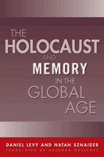

<body bgcolor="#FFFFFF" text="#000000" link="#0000FF" vlink="#CC0000" alink="#CC0000"><center><hr width="350" size="1" align="center" noshade>How collective memory of the Holocaust advances human rights in the Global Age<hr width="350" size="1" align="center" noshade><p><a href="https://cdcshoppingcart.uchicago.edu/Cart/ChicagoBook.aspx?ISBN=9781592132751&&PRESS=temple" target="_top">Buy this book!</a> | <a href="https://cdcshoppingcart.uchicago.edu/Cart/Cart.aspx?PRESS=temple" target="_top">View Cart</a> | <a href="https://cdcshoppingcart.uchicago.edu/Cart/Cart.aspx?PRESS=temple" target="_top">Check Out</a></p><p></p></center><!--none//--><h1>The Holocaust and Memory in the Global Age</h1>
<H2><!-- Translated by Assenka Oksiloff --></H2>
<h3>Daniel Levy and Natan Sznaider, translated by Assenka Oksiloff</h3>
<P>cloth 1-59213-275-8 $85.50, Nov 05, <FONT COLOR=#990033>Available</FONT>
<br>paper 1-59213-276-6 $32.95, Nov 05, <FONT COLOR=#990033>Available</FONT>
<BR> 240 pp
5.5x8.25
</P><BLOCKQUOTE><I>"Levy and Sznaider successfully demonstrate why 'holocaust'is no longer an exclusively Jewish or German concern. Their treatment of how the Holocaust is remembered, taught, memorialized, studied, and incorporated into law and policy in each of the three countries [Israel, Germany, and the US] as well as internationally is empirically rich and informative. Their larger argument about the decoupling of collective memory from national boundaries and the emergence of cosmopolitan meanings and concern is ingenious."</i>
<br>&#151<b>David Abraham</b>, University of Miami School of Law<i></I></BLOCKQUOTE>
<p>Can collective memories of the past shape the future? If one of the fears about a globalized society is the homogenization of culture, can it nevertheless be true that the homogenization of memory might have a positive impact on political and cultural norms?
<p>Originally published in Germany, <i>The Holocaust and Memory in the Global Age</i> examines the nature of collective memory in a globalized world, and how the memory of one particular event&#151the Holocaust&#151helped give rise to an emerging global consensus on human rights.
<p>Daniel Levy and Natan Sznaider show how memories of the Holocaust have been de-contextualized from the original event and offer a framework for interpreting contemporary acts of injustice such as ethnic cleansing and genocide. Representations of mass atrocities in Bosnia and Kosovo during the 1990s resonated with iconographies of the Holocaust and played a significant role in the political and military interventions in the Balkans. Subsequently, these representations have had a crucial impact on the consolidation of international human rights and related issues of transitional justice, reparations, and restitution.
<BR>&nbsp;<h2>Excerpt</h2><P>Excerpt available at <a href="http://www.temple.edu/tempress">www.temple.edu/tempress</a></p>
<BR>&nbsp;<h2>Reviews</h2>
<p><i>"</i>The Holocaust and Memory in the Global Age<i> by Daniel Levy and Natan Sznaider is the definitive study of the Shoah in our new, global world. The authors analyze the Holocaust as a key to our understanding the construction of collective memory in a world driven by media. They examine the claims of the competing cultural uses of the Holocaust in film, popular history, and high theory, from Spielberg to Goldhagen to Bauman, and beyond. This is an important book not only because of the subtlety and intelligence of the authors, but because they take seriously the implications of using the Holocaust to pattern our own understanding of events in the twenty-first century."</i>
<br>&#151<b>Sander L. Gilman</b>, Weidenfeld Professor of European Comparative Literature, St. Anne's College / Oxford
<p><i>"The authors have provided an excellent and insightful analysis of the way the Holocaust provides a core for modern society and a catalyst for a globalized human rights culture that privileges the identity of victims as a form for redressing their suffering."</i>
<br>&#151<b>Elazar Barkan</b>, Professor of History and Cultural Studies, Claremont Graduate University
<p><i>"This translation makes a highly original contribution to holocaust, human rights, and globalization scholarship. Levy and Sznaider's rich comparative and historical analysis of responses to the Holocaust over time yields significant theoretical insights, which illuminate how memory culture is being constructed and diffused in an increasingly global world, and persuasively argues for its importance in laying a basis for cosmopolitan identity."</i>
<br>&#151<b>Ruti Teitel</b>, Ernst C. Stiefel Professor of Comparative Law, New York Law School, and author of <i>Transitional Justice</i><p><i>
"In comparing the memorializing process in three nations: the U.S., Israel, and Germany, the authors give new meaning to the global/local dialectic." </i>
<br>&#151;<b><i>Contemporary Sociology</i></b>
<p><i>"[M]any have noted that the Holocaust is remembered differently in the United States than in Israel, which in turn remembers the event differently than any number of other nations. Levy and Sznaider’s book attempts to break this mould...they present a lucid and convincing argument that the Holocaust has increasingly come to represent the paradigmatic event of twentieth-century evil within a universal ethic of internationalized human rights....As an attempt to draw some of the attention in discussion of Holocaust memory away from the context of the nation and onto an international context, this work is a success."</i><br>&#151<b><i>The Journal of Jewish Studies</i></b>
<p><i>“By raising these issues, by showing how the Holocaust has been transformed into a model for global collective memory, the authors demonstrate that certain norms for human rights must, at the very least, be acknowledged in these uncertain times. This conclusion, in the end, could leave the reader with some hope, even as the struggle over the Holocaust’s meaning for the future continues. …This volume provides an interesting addition to ongoing debates over the memory of the Holocaust….[T]hose wishing to read something beyond the long list of works on the Germans’ struggle over their past and consider questions about the future might wish to give this work a glance. While there is obviously no answer yet to how the role of the Holocaust in our future will unfold, those who read this volume will, at the very least, have the opportunity to consider questions that are likely to become even more serious in the coming decades.”</i> <br>&#151<b><i>H-Net</i></b>
<BR>&nbsp;<h2>Contents</h2><P>
<p>1. Revised Introduction to the English Edition
<p><b>Part I</b>
<br>2. Cosmopolitan Memory
<br>3. Holocaust and Diaspora
<p><b>Part II</b>
<br>4. The Postwar Years
<br>5. Debates and Reflections
<p><b>Part III</b>
<br>6. The Holocaust between Representation and Institutionalization
<br>7. The Consequences of Cosmopolitan Memory
<p>Bibliography
<br>Index
</P><BR>&nbsp;<H2>About the Author(s)</H2>
<table><tr><td valign="top"><img src="/tempress/authors/1720_au1.gif" height="90" width="75"></td><td width="100%" valign="middle"><p><b>Daniel Levy</b> is Assistant Professor of Sociology at the State University of New York, Stony Brook.</P></td></tr></table><table><tr><td valign="top"><img src="/tempress/authors/1720_au2.gif" height="90" width="75"></td><td width="100%" valign="middle"><p><b>Natan Sznaider</b> is Associate Professor of Sociology at the Academic College of Tel-Aviv-Yaffo, Israel.</P></td></tr></table>
<BR><H2>Subject Categories</H2>
<p><A HREF="/tempress/history.html" TARGET="_top">History</a>
<BR><A HREF="/tempress/jewish.html" TARGET="_top">Jewish Studies</a>
<BR><A HREF="/tempress/philosophy.html" TARGET="_top">Philosophy and Ethics</a>
</p>
<BR><h2 class="inpageheading">In the series</H2>
<P><I><a href="http://www.temple.edu/tempress/phsc.html" onMouseOver="window.status='Click for other books in this series!'; return true;" onMouseOut="window.status=''; return true;" target="_top">Politics, History, and Social Change</a></i>, edited by John C. Torpey.
</p><p>This series will disseminate serious works that analyze the social changes that have transformed our world during the twentieth century and beyond. The main topics to be addressed include international migration; human rights; the political uses of history; the past and future of the nation-state; decolonization and the legacy of imperialism; and global inequality. The series will also translate into English outstanding works by scholars writing in other languages.</p>
<p align="center"><a href="https://cdcshoppingcart.uchicago.edu/Cart/ChicagoBook.aspx?ISBN=9781592132751&&PRESS=temple" target="_top">Buy this book!</a> | <a href="https://cdcshoppingcart.uchicago.edu/Cart/Cart.aspx?PRESS=temple" target="_top">View Cart</a> | <a href="https://cdcshoppingcart.uchicago.edu/Cart/Cart.aspx?PRESS=temple" target="_top">Check Out</a></p><p><font face="Arial" size="1"><a href="copyright.html" onMouseOver="window.status='Web Copyright Policy';return true;" onMouseOut="window.status=''" title="Web Copyright Policy">&copy;</a> 2015 <a href="http://www.temple.edu" target="new" onMouseOver="window.status='Link to Temple University home page';return true;" onMouseOut="window.status=''" title="Link to Temple University home page">Temple University</a>. All Rights Reserved. http://www.temple.edu/tempress/titles/1720_reg.html</font></p>